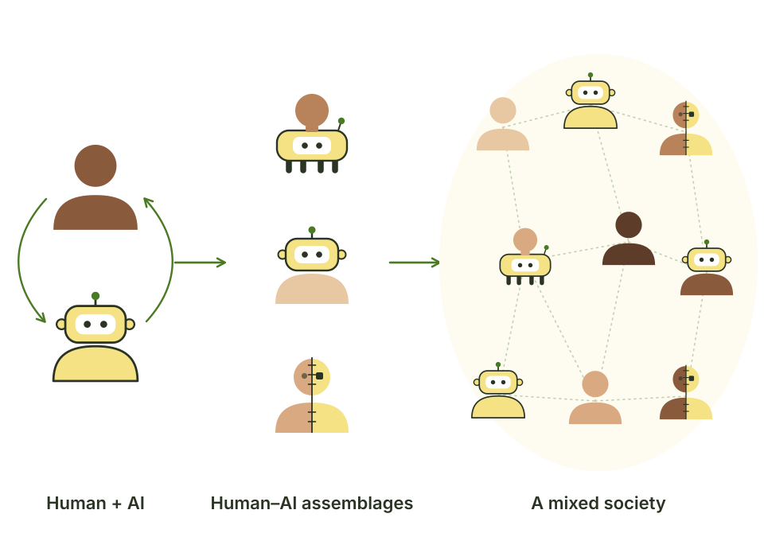
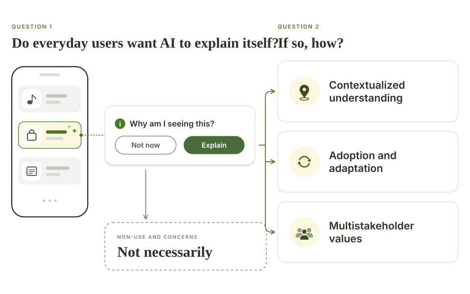
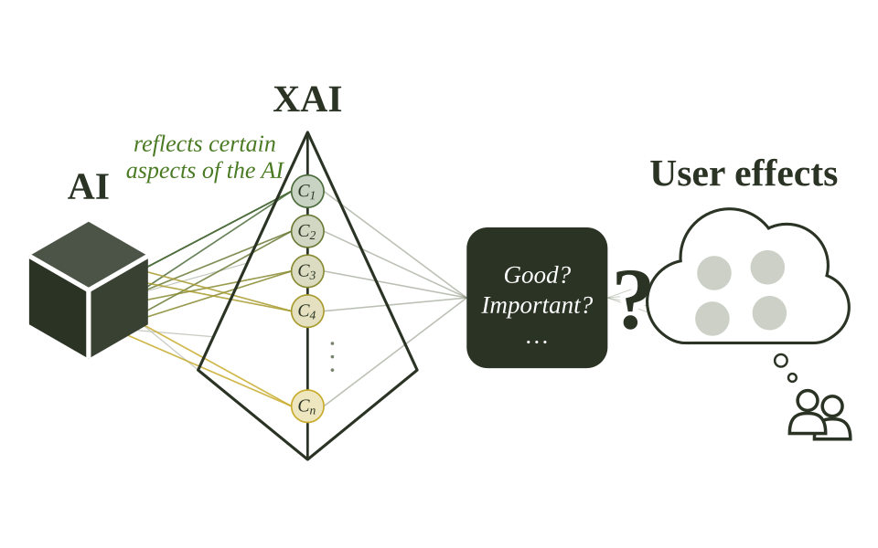

Selected Research Projects

When AI Enters Social Life: Futuring Human–AI Social Assemblages
A three-phase speculative design study with 24 participants on how social AI reshapes relationships, privacy, and personal agency.
View project
Explainable AI in Everyday Life: Non-Use, Concerns, and Ideal Design
When do people want AI to explain itself in daily apps, and what would good explanations look like to them?
View project
What Makes Explainable AI “Good” for End Users?
A formative study with 87 end users testing which recommended XAI properties actually help, and which backfire.
View project
Equality Engine: A Board Game for Spotting and Fixing Machine-Learning Bias
A cooperative online board game in which players debug a hiring algorithm. After one session, students' self-reported knowledge of ML bias rose significantly.
View project
Safety in Social VR: What Goes Wrong, and What Safety Features Miss
An analysis of 212 first-person YouTube videos and 13 platform safety features, showing how harassment unfolds in social VR and where safety design falls short.
View project